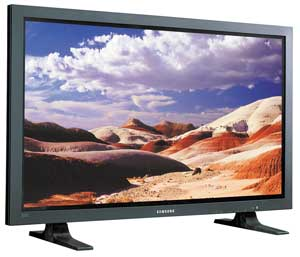
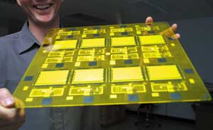
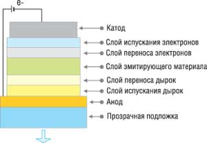
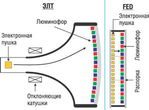
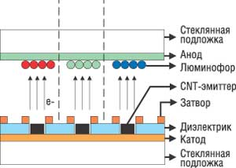
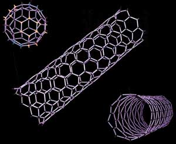

Алексей Борзенко
Для создания плоских дисплеев (Flat Panel Display, FPD) в настоящее время используют различные технологии и решения, хотя на рынке по-прежнему доминируют жидкокристаллические (ЖК) экраны. Как известно, по технологии создания современные дисплеи можно разделить на две группы. К первой группе относятся устройства, основанные на излучении (эмиссии) света, например, традиционные на базе электронно-лучевых трубок (ЭЛТ), и плазменные дисплеи (Plasma Display Panel, PDP). Во вторую группу входят устройства трансляционного типа, к которой относятся и ЖК-мониторы. Устройства обеих групп имеют собственные, вполне определенные достоинства и недостатки. Если же говорить о будущей конвергенции устройств, то перспективные решения в области создания современных дисплеев действительно часто совмещают особенности обеих технологий.
Плазменные дисплеи
На рынке больших экранов до сих пор преобладают так называемые плазменные дисплеи - PDP (рис. 1). Первые исследования и разработки в этой области относятся к началу 60-х годов. Стоит напомнить, что монохромные PDP-экраны использовались даже в некоторых переносных компьютерах. Работа плазменных мониторов очень похожа на работу неоновых ламп, сделанных в виде трубки, заполненной инертным газом низкого давления. Внутрь трубки помещена пара электродов, между которыми зажигается электрический разряд, и возникает свечение. Аналогично, плазменные экраны создаются путем заполнения пространства между двумя стеклянными поверхностями инертным газом, например, аргоном или неоном. Затем на стеклянную поверхность помещают маленькие прозрачные электроды, на которые подается высокочастотное напряжение. Под действием этого напряжения в прилегающей к электроду газовой области возникает электрический разряд. Плазма газового разряда излучает свет в ультрафиолетовом диапазоне, который вызывает свечение частиц люминофора в диапазоне, видимом для человека. Фактически каждый пиксел на экране работает, как обычная флуоресцентная лампа.
|  | Рис. 1. Плазменная панель.
|
Высокая яркость и контрастность наряду с отсутствием дрожания составляют большое преимущество таких мониторов. Кроме того, угол (по отношению к нормали), под которым можно увидеть нормальное изображение на плазменных панелях, существенно больше, чем у обычных ЖК-мониторов. Главные же недостатки PDP-устройств - довольно высокая потребляемая мощность, возрастающая при увеличении диагонали монитора, и низкая разрешающая способность, обусловленная большими размерами элемента изображения.
Цветные PDP-дисплеи сегодня выпускают практически все крупные японские и южнокорейские компании, работающие в этой сфере, - LG, Mitsubishi, NEC, Panasonic, Pioneer, Samsung. Лидером в этом секторе рынка заслуженно считается корпорация Fujitsu (http://www.fujitsu.com), которая еще в 1999 г. организовала с Hitachi совместное предприятие для производства плазменных дисплеев. Для повышения качества изображения и уменьшения цены корпорация, в частности, разработала специальную технологию Alternate Lighting of Surfaces (ALiS).
Японская ассоциация по электронике и информационным технологиям - JEITA оценивает в этом году рынок PDP-устройств на уровне 4,3 млн шт. Однако все производители сегодня активно ищут замену данной технологии и, по имеющейся информации, даже Fujitsu планирует отказаться от PDP в пользу более перспективных решений.
Органические и полимерные дисплеи
Как предполагают многие аналитики, объем рынка нанотехнологий будет ежегодно расти на 40% в течение ближайших 10-15 лет, а вычислительная техника и электроника одними из первых получат реальную возможность применения нанотехнологий на практике. Так, компания NanoBillboard (http://www.nanobillboard.com) опубликовала список 10 лучших на сегодня продуктов, созданных с помощью нанотехнологий; критериями отбора были популярность на рынке, использование нанотехнологий и применение продукта в повседневной жизни. Первым номером в этом списке оказались органические светоизлучающие диодные (Organic Light Emitting Diode, OLED) дисплеи, созданные из нескольких слоев нанопленок. Отметим, что оборот от продаж OLED-устройств во всем мире за прошлый год, согласно оценкам аналитической компании iSuppli (http://www.isuppli.com), увеличился примерно на 74% по сравнению с 2003 г. и должен составить свыше 430 млн долл.
Вообще говоря, светодиоды - вещь совершенно не новая. В технике они получили широкое распространение еще в середине прошлого века, а идея создания первых устройств отображения на базе подобных диодов возникла в начале 1980-х годов, но не была реализована из-за отсутствия необходимых материалов. Ситуация изменилась с появлением органических материалов особой группы - так называемых проводящих электролюминесцентных полимеров. Основой для этих материалов служат высокомолекулярные соединения с молекулами, в которых имеются чередующиеся двойные связи. В чистом виде они не являются проводниками заряда, поскольку электроны в них локализованы за счет участия в образовании сильных химических связей. Для освобождения электронов применяются различные примеси, после добавления которых и появляется возможность перемещения зарядов (электронов и дырок) вдоль молекулярной цепи.
Таким образом, в основе технологии лежат свойства так называемых сопряженных полимеров. В их молекулах атомы углерода образуют между собой двойные (или тройные) связи, на образование которых каждый атом отдает два электрона вместо обычного одного. В результате перекрытия p-орбиталей появляются "свободные" электроны; как следствие, становится возможным протекание электрического тока вдоль молекулярных цепей. Возникают энергетические зоны валентности и проводимости, разделенные запретной зоной. Так полимеры приобретают свойства полупроводников. Эти материалы обладают всеми теми же свойствами, что и неорганические полупроводники, т. е. способны образовывать p-n-переход и - что особенно важно - при определенных условиях излучать свет. Это позволило создать комбинированные по принципу действия устройства - излучающие диоды.
В исследованиях OLED выделилось два основных направления, одно из которых заложили ученые из Eastman-Kodak, еще в 1987 г. опубликовавшие статью Organic electroluminiscent diodes, где был описан новый класс тонкопленочных устройств на базе органических материалов, обладающих электролюминесцентными свойствами, заметно превосходящими все, что было создано в этой области ранее. Впервые предложенная Kodak схема с двумя слоями органики между электродами вместо одного и сегодня остается одним из основных вариантов для создания OLED-устройств. При этом технологический процесс использует циклы вакуумного испарения (осаждения). Еще в феврале 1999 г. корпорации Sanyo Electric и Eastman-Kodak образовали альянс для разработки и продвижения на рынке OLED-дисплеев. Уже через несколько месяцев они смогли показать работающий прототип полноцветного активноматричного дисплея.
Основы другого направления - технологии Polymer LED были заложены в 1989 г., когда профессор Ричард Френд (Richard Friend) вместе с группой химиков лаборатории Кембриджского университета открыл светоизлучающие полимеры LEP (Light Emitting Polymer). Вскоре выяснилось, что открытые вещества обладают рядом свойств, которые позволяют разработать на их основе семейство дисплеев нового поколения. Для изучения LEP и создания новых дисплеев была образована компания CDT (Cambridge Display Technologies, http://www.cdtltd.co.uk). Вскоре она нашла инвесторов, и началась разработка первого дисплея, сделанного на основе LEP-, или PLED-технологии (рис. 2).
|  | Рис. 2. Опытное производство PLED-дисплеев.
|
Специалисты из CDT сумели решить ряд проблем, применив, например, специальные методики производства упорядоченных полимеров, а также новые материалы. Чтобы добиться излучения света, был спроектирован аналог неорганического диода. Он состоял из двух слоев - полифениленвинилена (polyphenylene-vinylene, PPV) и циано-PPV (CN-PPV), размещенных между полупрозрачным электродом (оксиды индия и олова), нанесенным на подложку стекла, с одной стороны, и металлического контакта - с другой. Эти материалы - PPV и циано-PPV - выступают не только как полупроводники, но и как самоизолирующие полимеры. Как показали исследования, CN-PPV хорошо подходит для транспортировки электронов благодаря более низкому положению дна зоны проводимости. Электрические характеристики материалов подобраны так, чтобы электроны из CN-PPV и дырки из PPV собирались вдоль границы контакта слоев, где и происходит рекомбинация электронов и дырок с генерацией фотонов.
Базовые решения
На сегодняшний день OLED/PLED-технологиями занимаются несколько десятков компаний и университетов. Новые материалы представляют собой куда более сложные комбинации веществ по сравнению с тем, что было на заре этих технологий. Появились новые химические формулы базовых слоев, обогащающие добавки, отвечающие каждая за свою часть спектра - красную, синюю, зеленую. Ведь, как и в традиционных ЭЛТ-дисплеях, OLED-экран представляет собой матрицу, состоящую из комбинаций ячеек трех основных цветов - красного, синего и зеленого. В зависимости от того, какой цвет требуется получить, регулируется уровень напряжения на каждой из ячеек матрицы, и в результате смешения трех образующихся оттенков получается искомый цвет.
Итак, структура OLED-ячейки многослойна (рис. 3). Сверху OLED-панели располагается металлический катод, снизу - прозрачный анод. Между ними расположено несколько органических слоев, собственно и составляющих светодиод. Один слой служит источником дырок, второй - полупроводниковым каналом, третий слой транспортирует электроны и, наконец, в четвертом слое происходит замещение дырок электронами, которое в светоизлучающих полимерах сопровождается световым излучением.
|  | Рис. 3. Базовая структура OLED.
|
Как и ЖК-экраны, OLED-дисплеи бывают активными и пассивными. Последний тип устроен как простейший двухмерный массив пикселов в виде пересекающихся строк и колонок. Каждое такое пересечение представляет собой OLED-диод. Чтобы заставить его излучать свет, управляющие сигналы подаются на соответствующую строку и колонку. Чем больше поданное напряжение, тем выше будет светимость пиксела. Напряжение требуется достаточно высокое, вдобавок подобная схема, как правило, не позволяет создавать большие экраны, состоящие более чем из миллиона пикселов.
Что касается активной матрицы, это все тот же двухмерный массив из пересекающихся колонок и линий, но на сей раз каждое из их пересечений представляет собой не только светоизлучающий элемент, или OLED-диод, но и управляющий им тонкопленочный транзистор. Управляющий сигнал посылается уже на него, а он, в свою очередь, "запоминает", какой уровень светимости требуется от ячейки и, пока не будет дана другая команда, исправно поддерживает этот уровень тока. И напряжение в этом случае требуется куда более низкое, и ячейка куда быстрее реагирует на изменение ситуации. Обычно здесь используются тонкопленочные полевые транзисторы - TFT (Thin Film Transistor) на базе поликристаллического кремния.
Благодаря партнерству CDT с корпорацией Seiko Epson произошло, пожалуй, важнейшее событие в истории развития пластиковых дисплеев. Японцы предложили использовать модифицированную струйную технологию для "печати" пикселов экрана прямо на управляющих схемах из TFT-транзисторов. Дело в том, что использование пассивноматричных управляющих схем в сочетании с относительно невысокой скоростью работы полимерных "диодов" приводит к неудовлетворительной инерционности экранов. А достоинства активноматричной технологии не удавалось реализовать из-за неприменимости фотолитографии к тончайшим полимерным пленкам.
Отклик индустрии
На промышленной выставке FPD International 2004, проходившей в Йокогаме (Япония), корпорация LG.Philips LCD совместно с LG Electronics впервые продемонстрировала самую большую в мире активноматричную дисплейную панель на базе органических светодиодов. Устройство с размером диагонали 20,1 дюйма, по заявлению представителей этих компаний, было создано с использованием технологии низкотемпературного поликристаллического кремния LTPS (Low Temperature Poly Silicon). При этом LG.Philips LCD разработала TFT-модули, применяемые в продукте, а LG Electronics предоставила процесс вакуумного испарения для органических субстанций. Вообще говоря, южнокорейские и японские производители дисплейных панелей уделяют большое внимание совершенствованию и маркетингу OLED-технологий, которые, в частности, превосходят плазменные и ЖК-дисплеи по качеству изображения.
В начале этого года корпорация Samsung Electronics (http://www.samsungelectronics.com) сообщила, что ею создан прототип крупнейшего в мире монитора по технологии OLED. Представленный Samsung 21-дюйм экран имеет разрешение WUXGA (Wide Ultra Extended Graphics Array) с яркостью 600 нит (кандел на кв. метр) и контрастность 5000:1, что делает его применимым для воспроизведения видео высокой четкости. В производственном процессе используется технология аморфного кремния (a-Si), который применяется в некоторых производствах ЖК-панелей, так что новые панели можно в принципе выпускать на существующих производственных линиях. Как утверждают в корпорации, вопрос коммерческого производства сейчас находится в стадии рассмотрения.
Успехи южнокорейской корпорации просто поражают, если учесть, что всерьез OLED-технологией она начала заниматься лишь в 2000 г., запустив так называемый i-Project, в приложении к мобильным телефонам с экранами размером в 1,5-2 дюйма. Впоследствии Samsung Electronics стала сотрудничать с Vitex Systems (http://www.vitexsys.com), известной в то время своей фирменной технологией Vacuum Polymer Technology (VPT). Корпорация начала реализовывать программу Barrier Engineering Program, целью которой была разработка методов защиты субстрата (подложки) от окисления кислородом, воздействия воды и прочих подобных факторов. Обычно в качестве оптимального материала используется стекло, которое хорошо многим, кроме, например, гибкости. Vitex же предлагала наносить непосредственно на OLED-матрицу слой из полимеров и керамической пленки, защищающий их не хуже стекла, но в то же время абсолютно гибкий. Сначала неравномерный рельеф OLED-экрана заливается тонким слоем жидкости-"мономера", поверхность которого, естественно, будет абсолютно ровной. Потом этот "мономер" полимеризуется, переходя в твердое состояние, а сверху на него наносится необходимое число защитных слоев полимеров и керамики. За счет того, что подложка доведена до абсолютно ровного состояния, защита получается весьма надежной, и все это при общей ее толщине не более 3 мкм, т. е. куда тоньше и легче, чем стекло. В настоящее время Vitex Systems разработала еще более совершенную технологию Barix.
Хотя в прошлом году японская корпорация Seiko Epson показывала прототип 40-дюйм OLED-экрана, в Samsung Electronics говорят, что их 21-дюйм образец превосходит представленный японцами, поскольку та панель по сути собиралась из четырех смежных 20-дюйм экранов. Более того, корпорация уже весной продемонстрировала собственную 40-дюйм OLED-панель на международной выставке-конференции Society of Information Display 2005 в Бостоне.
Кстати, в конце прошлого года Seiko Epson и Universal Display Corp. (UDC, http://www.universaldisplay.com) подписали соглашение о совместной разработке новой технологии - PHOLED (Phosphorescent OLED). По мнению разработчиков, дисплеи на ее основе могут быть в четыре раза эффективнее тех, что созданы на базе существующей OLED-технологии, и, кроме того, будут потреблять меньше энергии, рассеивать меньше тепла и станут более долговечными. UDC использует результаты американской научной школы, взяв за основу результаты исследований ученых из Принстона (Princeton) и Университета Южной Калифорнии (University of Southern California). Среди предложенных корпорацией разновидностей дисплеев есть оригинальный вариант с прозрачным экраном - TOLED (Transparent OLED), с увеличенным коэффициентом контрастности. Такие устройства могут найти применение в салонах автомобилей (монитор на ветровом стекле), шлемах и очках-мониторах. Еще одна конструкция предусматривает расположение субпикселов TOLED "бутербродом" - SOLED (Stacked OLED), что позволит создавать полноцветные мониторы высокого разрешения. И наконец, возможны "гибкие" экраны FOLED (Flexible OLED), а точнее говоря, экраны, выполненные на гибкой подложке, спектр применения которых может быть самым широким.
Преимущества и недостатки
Таким образом, есть все основания полагать, что под боком у ЖК-технологии развивается очень серьезный конкурент. Действительно, технологию OLED эксперты часто рассматривают как потенциальную замену не только ЖК-мониторов, но и плазменных панелей. Дело в том, что OLED-дисплеи имеют целый ряд существенных преимуществ. Они потребляют меньше энергии, не требуют дополнительной подсветки и при этом обеспечивают повышенную яркость, высокую контрастность и частоту регенерации изображения, видимого к тому же под большими углами обзора. Кроме того, OLED-устройства, согласно утверждениям сторонников этой технологии, имеют меньшее время отклика и поэтому лучше приспособлены для быстро меняющегося изображения.
Немаловажным фактором роста популярности OLED-дисплеев может стать также себестоимость массового производства, которая базируется на применении тонкопленочных технологий и стандартных литографических процессов. Такая комбинация может обеспечить низкие затраты и высокую надежность всего производственного процесса. Некоторые эксперты полагают, что при условии массового производства стоимость OLED-экранов будет ощутимо ниже, чем у ЖК-панелей. Немаловажен и тот факт, что такие мониторы работают при напряжении питания всего несколько вольт и имеют очень малую массу и толщину. Все это должно сделать технологию привлекательной для производителей электроники и плоскопанельных экранов. Однако до недавнего времени утверждалось, что уровень развития самой технологии не достиг пока точки возможности массового коммерческого производства. Исключения составляют уже устанавливаемые малые экраны в некоторых моделях сотовых телефонов, цифровых камер и наладонных компьютеров.
Из недостатков новой технологии стоит особо отметить относительно низкое "время жизни" (lifetime) излучающих полимеров. Самые большие проблемы возникли с материалами, излучающими синий свет. Сначала их время работы вообще не превышало 1000 ч, что было явно неприемлемо для практических применений. Но достигнутые на сегодняшний день успехи не могут не впечатлять. Хотя в синем спектре перспективные OLED-материалы по-прежнему остаются наименее долговечными, их срок жизни составляет уже около 10 тыс. ч. А осенью прошлого года CDT удалось получить OLED-материал с синим свечением, время жизни которого составило 40 тыс. ч.
Электролюминесцентные экраныМенее интенсивно развивается производство плоских дисплеев, основанных на электролюминесцентной (ElectroLuminescent, EL) технологии. О том, что некоторые материалы (например, сульфид цинка) при прохождении тока обладают способностью излучать видимый свет, известно еще с 1937 г. Однако практическое применение для плоских дисплеев этот эффект нашел спустя почти 50 лет, когда появились тонкопленочные EL-материалы. По мнению некоторых специалистов, EL-дисплеи имеют ряд преимуществ перед ЖК- и даже FED-устройствами. Это касается как разрешающей способности, так и контрастности, угла обзора и даже энергопотребления. Так, корпорации Casio Computer удалось значительно увеличить уровень яркости EL-дисплеев на основе аморфного кремния. Данное достижение позволит электролюминесцентным мониторам конкурировать в этом отношении с плазменными панелями. Улучшение яркости стало возможным в результате изменения структуры панели - между подложкой и светоизлучающим слоем введен еще один, дополнительный полимерный слой. Он позволяет предотвратить утечку тех электронов, которые в стандартных панелях не попадали на светоизлучающий слой, и таким образом повышает эффективность испускания света на 30%. В результате яркость увеличивается до 450 кд/м2 - втрое больше, чем у существующих панелей, использующих электролюминесцентную технологию. Экспериментальная модель панели повышенной яркости имела размер диагонали всего 2 дюйма, но Casio планирует к 2006-2007 финансовому году развернуть коммерческий выпуск модификаций таких дисплеев с диагональю от 30 до 40 дюймов. Другую интересную технологию предлагает компания iFire Technology, уже привлекшая на свою сторону таких производителей, как Sanyo Electric и Dai Nippon Printing. Толстопленочные диэлектрические электролюминесцентные панели TDEL (Thick-film Dielectric ElectroLuminescent) дебютировали в мае прошлого года и сразу продемонстрировали неплохие характеристики. При диагонали в 34 дюйма и величине угла обзора 170° максимальная яркость изображения составила примерно 500 кд/м2, причем коэффициент контрастности был равен 500:1. Для сравнения скажем, что аналогичные параметры для обычных ЭЛТ-устройств составляют соответственно 150 и 300:1. По словам разработчиков, данная технология позволит создавать большие панели при ценах на 30-50% ниже по сравнению с другими технологиями. И не только большие - экономическая оправданность сохраняется при диагоналях как 5, так и 50 дюймов. Напомним, что принцип действия электролюминесцентных панелей заключается в приложении электрического поля к многослойной структуре из двух электродов (полупрозрачного и алюминиевого) и слою диэлектрика, на который нанесен слой люминесцентного вещества (люминофора). Последний излучает свет под воздействием электромагнитного поля. Обычно слой люминофора состоит из какого-либо полупроводника, играющего роль генератора "разогретых" электронов, и излучающих центров с поглотителями, в роли которых выступают, например, атомы марганца, теллура или меди. Напряжение, необходимое для возбуждения люминесценции, столь велико, что пробивание тонкого слоя люминофора неизбежно. Поэтому обычно конструкция включает в себя два слоя диэлектрика, изолирующих люминофор от прямого контакта с электродами. Прибегнув к нанесению толстого слоя диэлектрика, сотрудникам iFire удалось увеличить надежность конструкции, что позволило масштабировать EL-технологию на дисплеи большого формата и повысить их яркость.
|
Автоэмиссионные FED- и SED-дисплеи
Большое внимание сегодня уделяется созданию дисплеев на базе автоэлектронной эмиссии (Field Emisson Display, FED). В отличие от ЖК-экранов, которые работают с отраженным светом, FED-панели сами генерируют свет, что роднит их с экранами на базе ЭЛТ и PDP-панелями, поскольку все они относятся к группе эмиссионных дисплеев (рис. 4). Однако в отличие от ЭЛТ, у которой всего три электронных пушки, в FED-устройствах для каждого пиксела предназначен свой электрод, благодаря чему толщина панели не превышает нескольких миллиметров. При этом каждый пиксел управляется напрямую, как и в ЖК-дисплеях с активной матрицей. Свою родословную FED-устройства ведут от разработок середины 1990-х гг., когда инженеры пытались создать по-настоящему плоский кинескоп.
|  | Рис. 4. Сравнение ЭЛТ- и FED-технологий.
|
Один из вариантов FED - так называемая технология SED (Surfaceconduction Electronemitter Display). Эту технологию трудно назвать новинкой, поскольку корпорация Canon (http://www.canon.com) начала работать над ней еще в 1986 г. Однако по ряду причин долгое время работы над SED не форсировались. В 1999 г. к проекту присоединилась корпорация Toshiba (http://www.toshiba.co.jp), добавив к ноу-хау Canon свой опыт в сфере производства ЭЛТ, в частности, технологию вакуумного напыления. Кроме того, Canon приобрела у компании Candescent Technologies (http://www.candescent.com), которая прошлым летом прекратила свое существование, все права на ее интеллектуальную собственность. Как известно, вышеупомянутая компания ускоренными темпами вела подготовку производства FED-устройств по собственной технологии - ThinCRT ("тонкая ЭЛТ"). По мнению ряда экспертов, решения, полученные Canon от Candescent Technologies, позволили значительно усовершенствовать ее собственную SED-технологию. Во многом благодаря этому альянс Canon и Toshiba смог представить на объединенной выставке перспективных технологий CEATEC 2004 (Combined Exhibition of Advanced Technologies), которая прошла в Японии в октябре прошлого года, первый прототип SED-дисплея. Диагональ экрана у этого устройства составляла 36 дюймов, а контрастность изображения - 8600:1. Одним из основных преимуществ данного устройства была не столько его толщина - 7 мм (толщина современного плазменного дисплея составляет несколько сантиметров), сколько сниженное энергопотребление: SED-дисплей потреблял всего 160 Вт, тогда как ЖК-дисплей с такой же диагональю экрана - 200 Вт, а PDP - 350 Вт. Как сообщалось, экспонат пользовался успехом, во всяком случае, к нему выстраивались длинные очереди.
Таким образом, изменения, внесенные в технологию, позволили разработчикам утверждать, что они научились делать SED-дисплеи дешевле, чем плазменные панели такого же размера. При этом новые экраны не менее плоские, чем ЖК, но свободны от всех их недостатков. Они обеспечивают столь же контрастное и насыщенное изображение, как хороший ЭЛТ-кинескоп, а энергии потребляют в полтора раза меньше.
В прошлом году Canon и Toshiba объявили о заключении соглашения о совместном производстве усовершенствованных плоскопанельных SED-дисплеев. Стоимость проекта составляет 1,82 млрд долл. Для его реализации было создано совместное предприятие SED Inc. Обе корпорации заявили, что начнут производство SED-дисплеев, в основном больших размеров (от 50 дюймов), в августе 2005 г. По их прогнозам, предприятие должно окупиться к 2010 г. Планируется произвести в этом году около 3 тыс. SED-дисплеев в месяц, в 2008 г. - 1,8 млн шт., а в 2010 г. - 3 млн шт. Более того, корпорация Toshiba планирует в текущем году полностью прекратить производство и продажу PDP-панелей (сначала операции будут свернуты в Японии, затем и в других регионах). Вместо "плазмы" корпорация сфокусируется на производстве SED-устройств. Ожидается, что в ближайшие несколько лет объемы продаж устройств отображения с экранами, диагональ которых превышает 40 дюймов, утроятся. По прогнозам исследовательской компании iSuppli (http://www.isuppli.com), с 7,2 млн шт. в прошлом году они возрастут к 2008 г. до 22 млн шт.
Принцип работы FED-дисплея
FED-дисплей представляет собой стеклянную пластину, на которой расположены электронные эмиттеры (катоды) - излучающие электроны элементы, аналогичные электронной пушке обычного вакуумного кинескопа. Параллельно ей расположена другая стеклянная пластина, на которую нанесено флуоресцирующее вещество. Между двумя пластинами создается высокое разрежение (вакуум). Кстати, одна из проблем, с которой сталкивались разработчики FED-панелей, состояла именно в том, что между двумя пластинами стекла, разделенными узкой щелью, должно создаваться разрежение (то есть должен быть откачан воздух). Но в этом случае пластины начинают притягиваться друг к другу, чего необходимо было избежать.
Эмиссия электронов из эмиттера за счет туннельного эффекта обеспечивается подачей потенциала на тонкую пленку, в которой прорезаны сверхтонкие (толщиной всего в несколько нанометров) щели. Часть "выбитых" электронов усиливается разностью потенциалов в зазоре между двумя пластинами и попадает на покрытую флуоресцирующим веществом пластину, вызывая его свечение. Каждый из катодов под воздействием разности потенциалов испускает электроны в строго определенную зону люминофора, равнозначную пикселу или субпикселу. В SED в качестве катода обычно используется пленка оксида палладия (считается, что это не только дешевый, но и стабильный материал), а анодом служит подложка на основе алюминия со слоем люминофора.
В отличие от ЭЛТ, где применяется от одного до трех "горячих" катодов, подобные дисплеи обладают сверхмалой толщиной, сравнимой с ЖК- и PDP-панелями, а также идеально плоской поверхностью экрана. Кроме того, используемый механизм формирования изображения исключил присущие ЭЛТ ограничения по площади экрана: теоретически возможны FED-дисплеи любого размера. Вместе с тем FED сохраняет положительные черты ЭЛТ, такие, как угол обзора 180°, небольшое время отклика (в пределах 2-3 мс) и естественная цветопередача, - показатели, к которым стремятся разработчики ЖК-дисплеев. В свою очередь, FED выгодно отличается от PDP существенно меньшим энергопотреблением и более высокой разрешающей способностью. При этом, по оценкам, стоимость производства FED в промышленных масштабах гораздо меньше, чем всех остальных популярных сегодня дисплеев. Еще один плюс SED-панели состоит в экономичности. По имеющейся информации, энергопотребление таких панелей почти наполовину меньше, чем у сравнимых с ними по размеру плазменных экранов. Но не обходится, конечно, и без минусов: технология массового производства таких панелей на первых порах не может быть дешевой.
Таким образом, конструкция FED-дисплея обеспечивает не только высокую яркость изображения и его качественную цветопередачу, ни в чем не уступающие вакуумным кинескопам, но и широкий угол обзора экрана, простоту и технологичность производства (отсутствует система развертки), а также возможность создания абсолютно плоских и тонких экранов.
Использование углеродных нанотрубок
Еще одна многообещающая технология создания плоских экранов - CNT-FED, которая использует углеродные нанотрубки CNT (Carbon NanoTubes). Еще с конца 90-х гг. в качестве катодов в FED-панелях начали использовать пучки углеродных нанотрубок, выращиваемых на подложке. Первым делом на стеклянную подложку наносится графитовый порошок с зернами размером 3-5 нм, а затем панель обрабатывается при определенных температуре и давлении. В течение нескольких минут зерна образуют волокна до 10-30 нм в сечении и до 100 нм в высоту, способные испускать электроны в вакуум под воздействием разности напряжений на катоде и аноде. Отрицательно заряженный катод образует решетку и излучает электроны через нанотрубки, которые как бы фокусируют их энергию (рис. 5).
|  | Рис. 5. Блок-схема дисплея на базе CNT-FED.
|
Новая технология будет применяться при производстве плоскопанельных дисплеев и, по мнению ее разработчиков, позволит значительно улучшить их характеристики. Дело в том, что углеродные нанотрубки имеют ряд исключительных свойств: электропроводность, соизмеримая с электропроводностью меди или кремния; лучшая среди всех известных материалов теплопроводность; прочность, превосходящая сталь почти в 100 раз. К тому же для производства плоских экранов технология CNT-FED обладает всеми преимуществами органических дисплеев OLED: не требует задней подсветки, имеет малое время отклика, широкий угол обзора и высококачественную цветопередачу. Однако время жизни дисплеев на базе CNT-FED значительно больше.
Не секрет, что многие из перспективных направлений в материаловедении, нанотехнологиях, наноэлектронике, прикладной химии связываются в последнее время с фуллеренами, нанотрубками и другими похожими структурами, которые часто называют общим термином "углеродные каркасные структуры". Под этим понимают большие молекулы, состоящие исключительно из атомов углерода. Часто говорят о том, что углеродные каркасные структуры - это новая аллотропная форма углерода. Главная особенность этих молекул заключается в их каркасной форме. Они выглядят как замкнутые, пустые внутри "оболочки". Самая знаменитая из углеродных каркасных структур - это фуллерен C60. В конце 80-х - начале 90-х гг., после того как была разработана методика получения фуллеренов в достаточных количествах, было обнаружено множество других, как более легких, так и более тяжелых фуллеренов, начиная от C20 (минимально возможной структуры) до C70, C82, C96 и выше.
Однако разнообразие углеродных каркасных структур на этом не заканчивается. В 1991 г. были обнаружены длинные цилиндрические углеродные образования, получившие название нанотрубок (рис. 6). Необычного в этих структурах довольно много. Во-первых, разнообразие форм: нанотрубки могут быть большими и маленькими, однослойными и многослойными, прямыми и спиральными. Во-вторых, несмотря на кажущуюся хрупкость и даже ажурность, нанотрубки оказались на редкость прочным материалом как на растяжение, так и на изгиб. Более того, под действием механических напряжений, превышающих критические, нанотрубки также ведут себя довольно интересно: они не рвутся и не ломаются, а просто перестраиваются. Кроме того, нанотрубки демонстрируют целый спектр самых неожиданных электрических, магнитных, оптических свойств. Например, в зависимости от конкретной схемы сворачивания графитовой плоскости нанотрубки могут быть как проводниками, так и полупроводниками.
|  | Рис. 6. Примеры углеродных нанотрубок.
|
Многие эксперты полагают, что необычные электрические свойства нанотрубок сделают их одним из основных материалов в наноэлектронике. Уже сейчас созданы опытные образцы полевых транзисторов на основе одной нанотрубки: прикладывая запирающее напряжение в несколько вольт, исследователи научились изменять проводимость однослойных нанотрубок на несколько порядков. Еще одно их применение заключается в создании полупроводниковых гетероструктур, т. е. структур типа металл-полупроводник или стык двух разных полупроводников. Теперь для изготовления такой гетероструктуры не надо будет выращивать отдельно два материала и затем "сваривать" их друг с другом. Все, что требуется, - это в процессе роста нанотрубки создать в ней некий структурный дефект. Тогда одна часть нанотрубки будет металлической, а другая - полупроводниковой.
Одним из первых коммерческих применений станет добавление нанотрубок в краски или пластмассу для придания этим материалам свойств электропроводности. Это позволяет заменить в некоторых изделиях металлические детали полимерными. Создан продукт на основе нанотрубок, по существу представляющий собой проводящий полимер. Кроме того, покрытия с примесью углеродных нанотрубок могут использоваться для отвода статического электричества или поглощения сигнала радара. В ближайшие годы нанотрубки найдут применение для изготовления оптоволокна или замены традиционных транзисторов в микросхемах.
Как говорилось выше, разработано уже и несколько применений нанотрубок в компьютерной индустрии. Так, созданы и опробованы прототипы тонких плоских дисплеев, работающих на матрице из нанотрубок. Под действием напряжения, прикладываемого к одному из концов нанотрубки, с другого конца начинают испускаться электроны, которые попадают на фосфоресцирующий экран и вызывают свечение пиксела. Получающееся при этом зерно изображения может быть фантастически малым - порядка микрона.
Результаты лабораторных исследований панелей FED с нанотрубками оказались вполне стабильными (срок их службы достигает 20 тыс. ч) и настолько выгодными в производстве, что стоимость дисплеев с 30-дюйм экраном обещает быть на 30% ниже самого дешевого ЖК-монитора с такой же диагональю. Собственные программы разработки панелей на базе CNT-FED ведут сейчас многие организации. Стоит отметить, что технология очистки углеродных нанотрубок (отделение хороших трубок от плохих) и способ введения нанотрубок в другие продукты еще требуют совершенствования.
Carbon Nanotechnologies (http://www.cnanotech.com, CNI), одна из ведущих компаний, производящая углеродные нанотрубки для IBM и различных исследовательских институтов, планирует в ближайшее время расширить производство, что может способствовать началу коммерческого применения технологии. Так, CNI планирует довести производство одностенных углеродных нанотрубок до 45 кг в смену. Кроме того, компания осваивает полномасштабное коммерческое производство и в этом году должна выпускать примерно полтонны нанотрубок в смену. Еще два года назад CNI могла изготовить всего около 0,5-1 кг подобного материала в день, а обычно производила примерно килограмм в неделю. Заметим, что углеродные трубки - материал довольно дорогой: в настоящее время 1 г этого материала предлагается за 10 долл. Эксперты утверждают, что в ближайшие два-три года цена его упадет до 1 долл. Это весьма существенное снижение, если учесть, что буквально несколько лет назад за 1 г CNT просили около 500 долл.
В лаборатории корпорации Motorola (http://www.motorola.com) нашли способ выращивания нанотрубок при низких температурах - это важное достижение, так как основа, к которой они крепятся (стекло или транзисторы), нечувствительна к нагреванию. В лаборатории Motorola создали также способ прецизионного размещения отдельных нанотрубок на поверхности материала. Возможность размещать их непосредственно на подложке при контролируемых расстояниях, размерах и длине гарантирует высокое качество изображения при оптимальном уровне эмиссии электронов, яркости, чистоте цвета и разрешении плоских дисплеев.
Ученые из IBM Research (http://www.research.ibm.com) нашли новый способ заставить углеродные нанотрубки излучать свет, что может привести к дальнейшему совершенствованию оптоволоконной технологии. Кроме того, специалисты "Голубого гиганта" продемонстрировали новый процесс выращивания углеродных нанотрубок, которые можно внедрять в процессоры, что должно привести к созданию в ближайшие десятилетия гораздо более мощных компьютеров.
Корпорация NEC (http://www.nec.co.jp) создала технологию, которая позволяет стабильно выращивать углеродные нанотрубки и изготавливать транзисторы на их основе. Интересно, что транзисторы на нанотрубках обладают более чем в 10 раз большей крутизной характеристики, чем кремниевые МОП-транзисторы. В NEC считают, что смогут выпустить первые коммерческие микросхемы на базе углеродных нанотрубок уже к 2010 г. Компанией был разработан процесс вакуумного напыления CVD (Chemical Vapor Deposition) и найден катализатор, позволяющий выращивать нанотрубки на поверхности кристалла кремния. К тому же удалось научиться контролировать ориентацию нанотрубок.